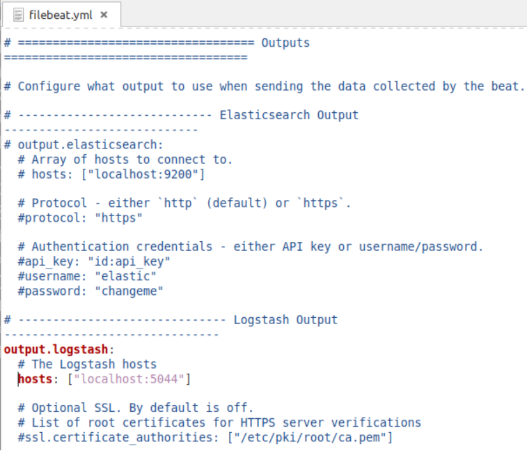

Ingest data from Beats to Elastic Cloud with Logstash as a proxyedit
This guide explains how to ingest data from Filebeat and Metricbeat to Logstash as an intermediary, and then send that data to Elastic Cloud. Using Logstash as a proxy limits your Elastic stack traffic through a single, external-facing firewall exception or rule. Consider the following features of this type of setup:
-
You can send multiple instances of Beats data through your local network’s demilitarized zone (DMZ) to Logstash. Logstash then acts as a proxy through your firewall to send the Beats data to Elastic Cloud, as shown in the following diagram:

- This proxying reduces the firewall exceptions or rules necessary for Beats to communicate with Elasticsearch Service. It’s common to have many Beats dispersed across a network, each installed close to the data that it monitors, and each Beat individually communicating with an Elastic Cloud deployment. Multiple Beats support multiple servers. Rather than configure each Beat to send its data directly to Elasticsearch Service, you can use Logstash to proxy this traffic through one firewall exception or rule.
- This setup is not suitable in simple scenarios when there is only one or a couple of Beats in use. Logstash makes the most sense for proxying when there are many Beats.
The configuration in this example makes use of the System module, available for both Filebeat and Metricbeat. Filebeat’s System sends server system log details (that is, login success/failures, sudo superuser do command usage, and other key usage details). Metricbeat’s System module sends memory, CPU, disk, and other server usage metrics.
In the following sections you are going to learn how to:
Time required: 1 hour
Get Logstash and Elasticsearch Serviceedit
- Get a free trial.
- Log into Elastic Cloud.
- Click Create deployment.
- Give your deployment a name. You can leave all other settings at their default values.
- Click Create deployment and save your Elastic deployment credentials. You will need these credentials later on.
-
You also need the Cloud ID later on, as it simplifies sending data to Elastic Cloud. Click on the deployment name from the Elastic Cloud portal or the Deployments page and copy down the information under Cloud ID:

Prefer not to subscribe to yet another service? You can also get Elasticsearch Service through AWS, Azure, and GCP marketplaces.
- Download and unpack Logstash version 7.12.0 on the local machine that hosts Beats or another machine granted access to the Beats machines.
Set up Metricbeatedit
Now that Logstash and your Elasticsearch Service deployment are set up, you can configure Metricbeat to send operational data to Logstash.
Install Metricbeat as close as possible to the service that you want to monitor. For example, if you have four servers with MySQL running, we recommend that you run Metricbeat on each server. This allows Metricbeat to access your service from localhost. This setup does not cause any additional network traffic and enables Metricbeat to collect metrics even in the event of network problems. Metrics from multiple Metricbeat instances are combined on the Logstash server.
If you have multiple servers with metrics data, repeat the following steps to configure Metricbeat on each server.
Download Metricbeat
Download Metricbeat and unpack it on the local server from which you want to collect data.
Enable the Metricbeat system module
Metricbeat has many modules available that collect common metrics. You can configure additional modules as needed. For this example we’re using Metricbeat’s default configuration, which has the System module enabled. The System module allows you to monitor servers with the default set of metrics: cpu, load, memory, network, process, process_summary, socket_summary, filesystem, fsstat, and uptime.
Load the Metricbeat Kibana dashboards
Metricbeat comes packaged with example Kibana dashboards, visualizations, and searches for visualizing Metricbeat data in Kibana. Before you can use the dashboards, you need to create the index pattern metricbeat-*, and load the dashboards into Kibana. This needs to be done from a local Beats machine that has access to the Internet.
- Open a command line instance and then go to <localpath>/metricbeat-7.12.0/
-
Run the following command, replacing:
-
<cloudID> with the Cloud ID of your Elastic Cloud deployment. You can include or omit the
<Deploymentname>:prefix at the beginning of the Cloud ID. Both versions work fine. -
<username> and <password> with the credentials you use to log into Elastic Cloud. Make sure to keep the colon between <username> and <password>.
sudo ./metricbeat setup \ -E cloud.id=<cloudID> \ -E cloud.auth=<username>:<password>
Depending on variables including the installation location, environment and local permissions, you might need to change the ownership of the metricbeat.yml.
You might encounter similar permissions hurdles as you work through multiple sections of this document. These permission requirements are there for a good reason, a security safeguard to prevent unauthorized access and modification of key Elastic files.
If this isn’t a production environment and you want a fast-pass with less permissions hassles, then you can disable strict permission checks from the command line by using
--strict.perms=falsewhen executing Beats (for example,./metricbeat --strict.perms=false).Depending on your system, you may also find that some commands need to be run as root, by prefixing
sudoto the command.Your results should be similar to the following:
Index setup finished. Loading dashboards (Kibana must be running and reachable) Loaded dashboards
-
<cloudID> with the Cloud ID of your Elastic Cloud deployment. You can include or omit the
- Close the command line interface instance.
- In <localpath>/metricbeat-7.12.0/ (where <localpath> is the directory where Metricbeat is installed), open the metricbeat.yml configuration file for editing.
- Scroll down to the Elasticsearch Output section. Place a comment pound sign (#) in front of output.elasticsearch and Elasticsearch hosts.
-
Scroll down to the Logstash Output section. Remove the comment pound sign (#) from in front of output.logstash and hosts, as follows:

- In the output.logstash section, update hosts with the connection information to access your Logstash server. The default hosts: ["localhost:5044"], assumes that Logstash and Metricbeat are on the same server. If another server is used, replace this value with the IP address or hostname of the other server, and include the port used (for example, 127.1.1.1:5044).
Set up FileBeatedit
The next step is to configure Filebeat to send operational data to Logstash. As with Metricbeat, install Filebeat as close as possible to the service that you want to monitor.
Download Filebeat
Download Filebeat and unpack it on the local server from which you want to collect data.
Enable the Filebeat system module
Filebeat has many modules available that collect common metrics. You can configure additional modules as needed. For this example we’re using Filebeat’s System module. This module reads in the various system log files (with information including login successes or failures, sudo command usage, and other key usage details) based on the detected operating system. For this example, a Linux-based OS is used and Filebeat ingests logs from the /var/log/ folder. It’s important to verify that Filebeat is given permission to access your logs folder through standard file and folder permissions.
- Go to <localpath>/filebeat-7.12.0/modules.d/ where <localpath> is the directory where Filebeat is installed.
- Scroll to the bottom of the file listing to find a file named system.yml.disabled. This is the system module and it’s currently disabled.
-
Rename the file from system.yml.disabled to system.yml.

The system module is now enabled in Filebeat and it will be used the next time Filebeat starts.
Load the Filebeat Kibana dashboards
Filebeat comes packaged with example Kibana dashboards, visualizations, and searches for visualizing Filebeat data in Kibana. Before you can use the dashboards, you need to create the index pattern filebeat-*, and load the dashboards into Kibana. This needs to be done from a Beats machine that has access to the Internet.
- Open a command line instance and then go to <localpath>/filebeat-7.12.0/
-
Run the following command, replacing:
-
<cloudID> with the Cloud ID of your Elastic Cloud deployment. You can include or omit the
<Deploymentname>:prefix at the beginning of the Cloud ID. Both versions work fine. -
<username> and <password> with the credentials you use to log into Elastic Cloud. Make sure to keep the colon between <username> and <password>.
sudo ./filebeat setup \ -E cloud.id=<cloudID> \ -E cloud.auth=<username>:<password>
Depending on variables including the installation location, environment and local permissions, you might need to change the ownership of the metricbeat.yml.
Your results should be similar to the following:
Index setup finished. Loading dashboards (Kibana must be running and reachable) Loaded dashboards Setting up ML using setup --machine-learning is going to be removed in 8.0.0. Please use the ML app instead. See more: https://www.elastic.co/guide/en/machine-learning/current/index.html Loaded machine learning job configurations Loaded Ingest pipelines
-
<cloudID> with the Cloud ID of your Elastic Cloud deployment. You can include or omit the
- Exit the CLI.
The index patterns for filebeat-* and metricbeat-* are now available in Elasticsearch. To verify:
- Login to Kibana.
- Open the Kibana main menu and click Stack Management and then Index Patterns.
- In the search bar, search for index patterns.
-
In the search results, click Kibana / Index Patterns Management. The display should be similar to the following:
 "" height="filebeat-">
"" height="filebeat-">
Finish configuring Filebeat
- In <localpath>/filebeat-7.12.0/ (where <localpath> is the directory where Filebeat is installed), open the filebeat.yml configuration file for editing.
- Scroll down to the Outputs section. Place a comment pound sign (#) in front of output.elasticsearch and Elasticsearch hosts.
-
Scroll down to the Logstash Output section. Remove the comment pound sign (#) from in front of output.logstash and hosts as follows:

- Still in the output.logstash section, update hosts with the connection information to access your Logstash server. The default hosts: ["localhost:5044"], assumes that Logstash and Filebeat are on the same server. If another server is used, replace this value with the IP address or hostname of the other server, and include the port used (for example, 127.1.1.1:5044).
Configure Logstash to listen for Beatsedit
Now the Filebeat and Metricbeat are set up, let’s configure a Logstash pipeline to input data from Beats and send results to the standard output. This enables you to verify the data output before sending it for indexing in Elasticsearch.
- In <localpath>/logstash-7.12.0/, create a new text file named beats.conf.
-
Copy and paste the following code into the new text file. This code creates a Logstash pipeline through a JDBC plugin.
input { beats{port => 5044} } output { stdout{codec => rubydebug} }Following are some additional details about the configuration file settings:
- beats{port ⇒ 5044}: Logstash listens for Beats input on the default port of 5044. Only one line is needed to do this. Logstash can handle input from many Beats of the same and also of varying types (Metricbeat, Filebeat, and others).
- stdout{codec ⇒ rubydebug}: This sends output to the standard output, which displays through your command line interface. This setting enables you to verify the data before you send it to Elasticsearch, in a later step.
- Save the new beats.conf file in your Logstash folder. To learn more about the file format and options, see Logstash Configuration Examples.
Output Logstash data to stdoutedit
Now, let’s try out the Logstash pipeline with the Metricbeats and Filebeats configurations from the prior steps. Each Beat sends data into a Logstash pipeline, and the results display on the standard output where you can verify that everything looks correct.
Test Metricbeat to stdout
-
Open a command line interface instance. Go to <localpath>/logstash-7.12.0/, where <localpath> is the directory where Logstash is installed, and start Logstash by running the following command:
bin/logstash -f beats.conf
-
Open a second command line interface instance. Go to <localpath>/metricbeat-7.12.0/, where <localpath> is the directory where Metricbeat is installed, and start Metricbeat by running the following command:
./metricbeat -c metricbeat.yml
-
Switch back to your first command line interface instance with Logstash. Now, Metricbeat events are input into Logstash and the output data is directed to the standard output. Your results should be similar to the following:
"tags" => [ [0] "beats_input_raw_event" ], "agent" => { "type" => "metricbeat", "name" => "john-VirtualBox", "version" => "7.12.0", "ephemeral_id" => "1e69064c-d49f-4ec0-8414-9ab79b6f27a4", "id" => "1b6c39e8-025f-4310-bcf1-818930a411d4", "hostname" => "john-VirtualBox" }, "service" => { "type" => "system" }, "event" => { "duration" => 39833, "module" => "system", "dataset" => "system.cpu" }, "@timestamp" => 2021-04-21T17:06:05.231Z, "metricset" => { "name" => "cpu", "period" => 10000 }, "@version" => "1","host" => { "id" => "939972095cf1459c8b22cc608eff85da", "ip" => [ [0] "10.0.2.15", [1] "fe80::3700:763c:4ba3:e48c" ], "name" => "john-VirtualBox","mac" => [ [0] "08:00:27:a3:c7:a9" ], "os" => { "type" => "linux", - Switch back to the Metricbeat command line instance. Enter CTRL + C to shut down Metricbeat, and then exit the CLI.
- Switch back to the Logstash command line instance. Enter CTRL + C to shut down Logstash, and then exit the CLI.
Test Filebeat to stdout
-
Open a command line interface instance. Go to <localpath>/logstash-7.12.0/, where <localpath> is the directory where Logstash is installed, and start Logstash by running the following command:
bin/logstash -f beats.conf
-
Open a second command line interface instance. Go to <localpath>/filebeat-7.12.0/, where <localpath> is the directory where Filebeat is installed, and start Filebeat by running the following command:
./filebeat -c filebeat.yml
-
Switch back to your first command line interface instance with Logstash. Now, Filebeat events are input into Logstash and the output data is directed to the standard output. Your results should be similar to the following:
{ "service" => { "type" => "system" }, "event" => { "timezone" => "-04:00", "dataset" => "system.syslog", "module" => "system" }, "fileset" => { "name" => "syslog" }, "agent" => { "id" => "113dc127-21fa-4ebb-ab86-8a151d6a23a6", "type" => "filebeat", "version" => "7.12.0", "hostname" => "john-VirtualBox", "ephemeral_id" => "1058ad74-8494-4a5e-9f48-ad7c5b9da915", "name" => "john-VirtualBox" }, "@timestamp" => 2021-04-28T15:33:41.727Z, "input" => { "type" => "log" }, "ecs" => { "version" => "1.8.0" }, "@version" => "1", "log" => { "offset" => 73281, "file" => { "path" => "/var/log/syslog" } }, - Review the Logstash output results to make sure your data looks correct. Enter CTRL + C to shut down Logstash.
- Switch back to the Filebeats CLI. Enter CTRL + C to shut down Filebeat.
Output Logstash data to Elasticsearchedit
In this section, you configure Logstash to send the Metricbeat and Filebeat data to Elasticsearch. You modify the beats.conf created earlier, and specify the output credentials needed for our Elastic Cloud deployment. Then, you start Logstash to send the Beats data into Elasticsearch.
- In your <localpath>/logstash-7.12.0/ folder, open beats.conf for editing.
-
Replace the output {} section of the JSON with the following code:
output { elasticsearch { index => "%{[@metadata][beat]}-%{[@metadata][version]}" cloud_id => "<myDeployment>" ssl => true ilm_enabled => true # api_key => "<myAPIid:myAPIkey>" user => "<Username>" password => "<Password>" } } -
In the code that you added, replace:
-
<myDeployment> with the Cloud ID of your Elastic Cloud deployment. You can include or omit the
<Deploymentname>:prefix at the beginning of the Cloud ID. Both versions work fine. -
<username> and <password> with the credentials you use to log into Elastic Cloud. Make sure to keep the colon between <username> and <password>. Alternatively, you may choose to use an API key to authenticate, as discussed in the next step. In this case, uncomment the
api_keysetting and leave theuserandpasswordsettings commented out (#).Following are some additional details about the configuration file settings:
-
index: We specify the name of the Elasticsearch index with which to associate the Beats output.
- %{[@metadata][beat]} sets the first part of the index name to the value of the Beat metadata field.
-
%{[@metadata][version]} sets the second part of the index name to the Beat version.
If you use Metricbeat version 7.12.0, the index created in Elasticsearch is named metricbeat-7.12.0. Similarly, using the 7.12.0 version of Filebeat, the Elasticsearch index is named filebeat-7.12.0.
- cloud_id: This is the ID that uniquely identifies your Elasticsearch Service deployment.
-
ssl: This should be set to
trueso that Secure Socket Layer (SSL) certificates are used for secure communication between Logstash and your Elasticsearch Service deployment. - ilm_enabled: Enables and disables Elasticsearch Service index lifecycle management.
- api_key: If you choose to use an API key to authenticate (as discussed in the next step), you can provide it here.
-
<myDeployment> with the Cloud ID of your Elastic Cloud deployment. You can include or omit the
-
Optional: For additional security, you can generate an Elasticsearch API key through the Elastic Cloud console and configure Logstash to use the new key to connect securely to the Elastic Cloud.
- Log in to the Elasticsearch Service Console.
-
Select your deployment on the home page in the Elasticsearch Service card or go to the deployments page.
Narrow your deployments by name, ID, or choose from several other filters. To customize your view, use a combination of filters, or change the format from a grid to a list.
- From your deployment menu, click Elasticsearch and then API Console.
-
Select Post from the drop-down list and enter
/_security/api_keyin the field. -
Enter the following JSON request:
{ "name": "logstash-apikey", "role_descriptors": { "logstash_read_write": { "cluster": ["manage_index_templates", "monitor"], "index": [ { "names": ["logstash-*","metricbeat-*","filebeat-*"], "privileges": ["create_index", "write", "read", "manage"] } ] } } }This creates an API key with the cluster
monitorprivilege which gives read-only access for determining the cluster state, andmanage_index_templateswhich allows all operations on index templates. Some additional privileges also allowcreate_index,write, andmanageoperations for the specified index. The indexmanageprivilege is added to enable index refreshes. -
Click Submit. The output should be similar to the following:
{ "api_key": "aB1cdeF-GJI23jble4NOH4", "id": "2GBe63fBcxgJAetmgZeh", "name": "logstash_api_key" } -
Enter your new
api_keyvalue into the Logstashbeats.conffile, in the format<id>:<api_key>. If your results were as shown in this example, you would enter2GBe63fBcxgJAetmgZeh:aB1cdeF-GJI23jble4NOH4. Remember to remove the pound (#) sign to uncomment the line, and comment out theusernameandpasswordlines:output { elasticsearch { index => "%{[@metadata][beat]}-%{[@metadata][version]}" cloud_id => "<myDeployment>" ssl => true ilm_enabled => true api_key => "2GBe63fBcxgJAetmgZeh:aB1cdeF-GJI23jble4NOH4" # user => "<Username>" # password => "<Password>" } }
-
Open a command line interface instance, go to your Logstash installation path, and start Logstash:
bin/logstash -f beats.conf
-
Open a second command line interface instance, go to your Metricbeat installation path, and start Metricbeat:
./metricbeat -c metricbeat.yml
-
Open a third command line interface instance, go to your Filebeat installation path, and start Filebeat:
./filebeat -c filebeat.yml
- Logstash now outputs the Filebeat and Metricbeat data to your Elasticsearch Service instance.
In this guide, you manually launch each of the Elastic stack applications through the command line interface. In production, you may prefer to configure Logstash, Metricbeat, and Filebeat to run as System Services. See the following pages for the steps to configure each application to run as a service:
View data in Kibanaedit
In this section, you log into Elastic Cloud, open Kibana, and view the Kibana dashboards populated with our Metricbeat and Filebeat data.
View the Metricbeat dashboard
- Login to Kibana.
- Open the Kibana main menu and click Analytics and then Dashboard.
- In the search box, search for metricbeat system. The search results show several dashboards available for you to explore.
- In the search results, click [Metricbeat System] Overview ECS. A Metricbeat dashboard opens:

View the Filebeat dashboard
- Open the Kibana main menu and click Analytics and then Dashboard.
- In the search box, search for filebeat system.
- In the search results, click [Filebeat System] Syslog dashboard ECS. A Filebeat dashboard displaying your Filebeat data:

Now, you should have a good understanding of how to configure Logstash to ingest data from multiple Beats. You have the basics needed to begin experimenting with your own combination of Beats and modules.